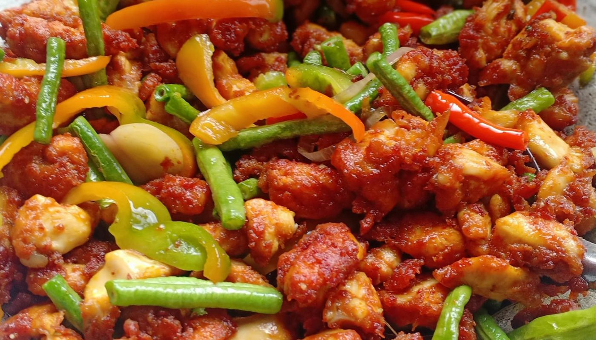

Tumeric Chicken

Home
This is how tumeric chicken looks like
Tumeric chicken is yummy
It is a delicacy
Ingredients
- Chicken
- Turmeric
- Fish sauce
- Oyster Sauce
- Sugar
- Garlic
- Pepper
Steps
- Mix the marinade in a bowl: garlic, fish sauce, oyster sauce, sugar and turmeric.
- Marinade the chicken for at least 3 hours, preferably overnight.
- Bake on a lined tray for 50 minutes until the surface is sticky and delicious.
- Baste using the tray juices at the 30 minute mark
- Then baste again at the 40 minute mark and pop it back in for a final 10 minutes to caramelise the surface.
- Garnish with fresh coriander/cilantro leave if you want (it’s just for looks), then serve using the pan
juices as a sauce!